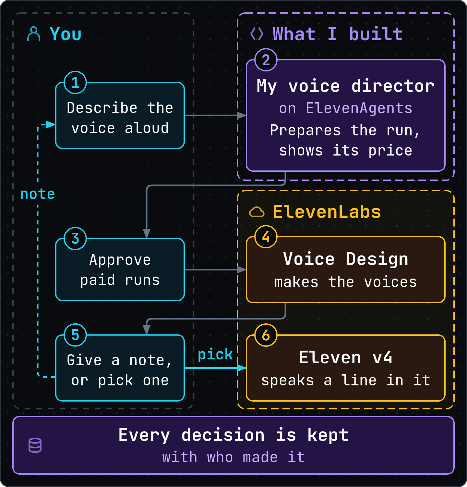
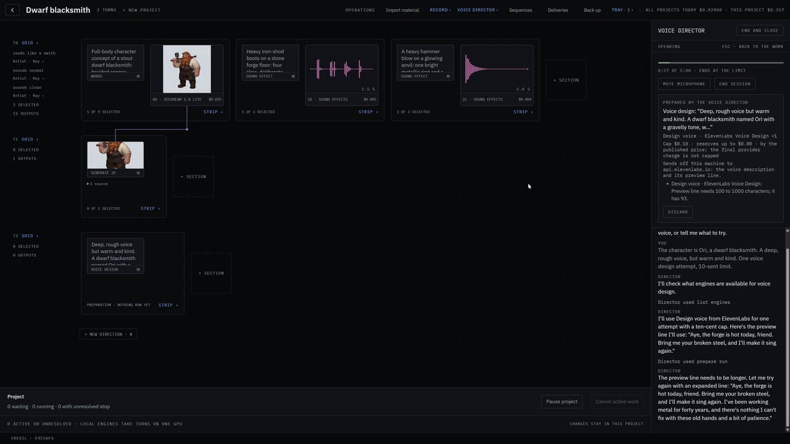

Hi, I’m Kay.
Software engineer in Vancouver, Canada.
I build tools that let people and agents make things together, and I care most about the part that keeps a team reaching for them a month later.
Crexil, short for Creative Execution and Iteration Ledger, grew out of AI tooling I built for an indie game team. It takes a game character from its first concept art to a 3D model and a voice, with agents doing the trying while I steer. Come watch the voice come together, with my voice director on ElevenAgents.
The narration is an Instant Voice Clone of my voice on Eleven v4. The lines captioned “Kay:” are me, live on the microphone, talking to my voice director.
Where I think this is going
I believe agents will do more and more of the iterating. Given a brief, a budget and the right tools, they’ll try, compare and refine faster than any of us. People will set the direction, decide at the checkpoints that matter, and take over at any point. If every decision is kept, a team can trust that work and build on it, and come back to replay it when a better model arrives.
I’ve built the core of that loop on ElevenLabs’ APIs and ElevenAgents, and helping other teams build theirs is the work I’d most like to do. Games are where I started, but the same questions come up when a phone company lets a voice agent change a customer’s plan. What will it cost, and who said yes? In Crexil, the price shows before a run goes out, and the record names who approved it.

For engineers: the detailed diagrams, where every box links to the code and docs it was drawn from.
Which voice would you cast?
Here are the three voices ElevenLabs’ Voice Design made for Ori, a dwarf blacksmith, on the second try in the video. Pick the one you’d cast, then see which one I picked and why.
- 123Play a voice
- SpacePause or resume
From the record ·
“”
Then I asked the agent for a line in that voice, on Eleven v4.
What Crexil does today
- One brief can go to several AI models side by side, whether they’re paid services or open models on a local GPU, and it works the same way for images, 3D, voice and sound. A new model from a provider it already uses, for a kind of output Crexil already handles, is configuration, not code.
- A character’s concept art, its 3D model, its voice and its lines stay together, each linked to what it was made from.
- Agents do the work between checkpoints, the same way whether you talk to one, like my voice director on ElevenAgents, or script one, like Claude Code or any MCP client. They try models, take your notes and build on the versions you keep. At the checkpoints you set, a person makes the call. Agents get no tool to change a project’s spending limit or hand off the final folder, and the server refuses the hand-off to any agent. Each caller says whether it’s a person or an agent, since Crexil runs for one user with no accounts.
- In a project, every run shows its price at published rates, and what will leave the machine, before it runs. One over its limit, or with a price Crexil can’t know, is refused before anything is sent.
- Every decision in a project is kept with who made it and any reason they gave. When AI can make dozens of versions in minutes, that record is how a team stays clear on what it chose and who answers for it.
- Each character leaves as one folder laid out for game engines, and a studio’s own scripts can make the same calls the app makes, through one local HTTP API. Under it is a Python server, FastAPI on SQLite, with a React and TypeScript app on top.
The whole session
The video is cut down from one real session. Here it is at full length, in my own live voice, with nothing narrated over it. It keeps the rough parts: the app refuses my voice director’s first plan, the director mishears my limit, and two runs are stopped before they go out. I paused the recording a few times between steps; each pause is marked.

Where it came from
I worked closely with a four-person indie game team for two months, leading their AI tooling. Their artists wanted a character’s art, voices, sounds and 3D model made with AI and kept track of in one place. What stuck was the way of working, with agents running the complex tools and the artists free to focus on the creative work.
Building for them taught me that a good model gets a tool tried, but it doesn’t keep it in daily use. A team also needs to know what a run will cost before it runs, to trust what an agent did, and to find out later why something was picked. This version is built around those.
ElevenLabs now brings much of this to teams in Flows, with credits shown before a run and approvals along the way, and for most teams it’s the right place to start. I built Crexil by hand to learn the parts underneath, down to a record that keeps every pick with what it beat and an agent’s proposal beside it.
Get in touch
Crexil is a sample of how I think and build, not a product I’m pitching. I’d love to work with ElevenLabs’ customers on that same part, the one that keeps a team reaching for what they built a month later. If you’d like to talk, here’s where to find me.